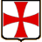

 The Knights Templar
History - Grand Masters - Symbols
The Knights Templar, also known as the Order of the Temple, were an order of warrior monks founded in 1118 in Jerusalem and abolished in 1312 by Philip IV the Fair.
Origins
The Order of the Temple was created by a handful of crusader knights (including Hugh de Payens) in the Holy Land - present-day Palestine (read Hugh de Payens' mysterious mission at the bottom of the page). King Baldwin II of Jerusalem gave them quarters near the Temple church after taking a vow of chastity, poverty and obedience. With the backing of Saint Bernard of Clairvaux, the rule was soon approved and published by the Council of Troyes (1128). Given the praised alliance between knightly ideals and monastic ideals, the Temple's success was fast-growing; several donations - including part of the Kingdom of Aragon bequeathed by King Alfonso the Battler, though subsequently declined - filled the order's coffers and enabled it to adopt a systematic land acquisition and clearing policy.
Organization
The Cistercian rule of the Knights Templar was very strict. Punishments included severe fasting for any violations of the order's three fundamental rules. The different clothes worn designated the individual's status within the order: although all mantles bore a red cross - the order's symbol since 1149 - the knights' mantels were white, while the mantels worn by the sergeants, chaplains and squires were black.
Influence throughout the Mediterranean
The hierarchy indicates the extent of the order's possessions: in 1257, they included 3 468 castles, fortresses and outhouses, spread throughout 19 provinces and sub-provinces. The house in Jerusalem comprised two monasteries with 350 knights and 1 200 sergeants. The knights' theater of war included the countries embroiled in the Reconquest: Palestine, the Iberian peninsula and Hungary; its military activities were only too real: five Grand Masters were killed in combat. The order's military activities were widely financed by revenues from countries in which it owned land and properties: the provinces, divided and subdivided into regions, bailiwicks and houses, could be found throughout Catholic Europe. The bailiwick of Arles comprised the commanderies with jurisdiction for Aix, Col de Cabres, Richerenches and Arles, eight commanderies without jurisdiction (including Nice and Avignon), 23 dependent commanderies, around 20 houses of the Temple and approximately 100 miscellaneous properties. Such wealth was unrivalled in all of the Christian West and enabled the Temple to considerably finance the popes and kings for the Crusades.
From withdrawal to abolition
The statutes of the Order of the Temple were reformed on
five occasions; at the turn of the 14th century, Boniface VIII wanted to unite the Knights
Templar and the Hospitallers, but Grand Master Jacques de Molay refused the proposal.
At the time, the face of the Crusades had radically changed:
the Eastern Roman Empire, with the fall of Acre in 1291, ceased to exist
and the surviving Knights Templar withdrew to France - where King Philip IV the Fair had
previously been refused money from the knights to fund his wars.
Despite the order's glorious past (Damietta, Aleppo, Las Navas de Tolosa), the cash-strapped
Philip the Fair had the Knights Templar imprisoned and then tortured by the Inquisition
after making off with their financial resources and account books;
the confessions made by 137 knights - who admitted to anything just to stop the torture
- justified the abolition of the order by the Council of Vienna in 1312 before Pope
Clement V, although the kings and princes of England, Spain, Scotland and Germany in particular
recognized the Temple's innocence. Grand Master Jacques de Molay was burned at the stake in 1314.
The Temple's goods were given to the Hospitallers or the successor orders created in
Spain: the Order of Our Lady of Montesa in the Valencia region and the Order of Christ in Portugal.
The Order of the Temple has entered the collective imagination
through the extraordinary propaganda campaign waged by Philip the Fair and tirelessly
recounted as legends. The Order of the Temple is undoubtedly one of the
most representative creations of the Crusades era.
Hugh de Payens' mysterious mission
As we saw in the presentation, the Order of the Temple was officially founded in the Holy Land in 1118. However, we will actually see that the official recognition of the Order in 1118 is merely an extension to a "mission" or "inquiry" started nearly 10 years earlier...
It has been demonstrated and accepted by all historians that Hugh de Payens made at least two trips to the East following the first Crusade, in 1104-1105 and in 1114-1115, accompanied on each occasion by Count Hugh of Champagne.
Let us turn our attention to the Count of Champagne. He was one of the kingdom's main feudalists, some 4 to 5 times richer than the King of France! Highly influenced by a certain religious form of mysticism, his links with Etienne Harding, the Abbot of Citeaux who reformed Benedictine thought to form the Cistercian movement, were close to say the least. The links were so close that Etienne Harding invited a monk from the Abbey of Chaise-Dieu, a specialist in Hebraic texts, to Citeaux in 1115 - coinciding just days after the Count of Champagne's return from the East! That very year, that same Count of Champagne took a young monk (Bernard) from Citeaux under his wing by offering him some land in the areas under his control in Clairvaux. From then on, the Abbey of Clairvaux and the thought of the future Saint Bernard were to reign throughout the Christian world during the 12th century...
In 1118, the Order of the Temple's "nine" founders included a certain André de Montbard, who was none other than Bernard of Clairvaux's uncle. It is worth mentioning that the Council took place in Troyes, the birthplace of Hugh de Payens and the Count of Champagne, who joined the Knights Templar in 1126 to follow the orders of a former vassal after forsaking his wife, children, wealth and power... Although it has not been proven that Bernard of Clairvaux actually managed the council, he nevertheless had a great influence on the drafting of the order's rule by introducing the concept of the warrior monk, in the strict tradition of his thought, urging the nobility to forego its private wars and serve the faith.
The chronology can be summarized as follows:
- 1104-1105: Hugh de Payens and the Count of Champagne go on a pilgrimage to the East
- 1105-1114: It is not known whether Hugh de Payens returns at the same time as the Count of Champagne, but we know that he is definitely back in France in 1110 due to a charter that he signed personally. In 1109, Etienne Harding is appointed Abbot of Citeaux. His links with the Count of Champagne are close.
- 1114-1115: The two Hughs travel back to the East. We know that Hugh de Payens remains there. The Abbot of Citeaux starts studying Hebraic texts. The Count of Champagne takes Bernard under his wing and gives him the land of Clairvaux.
- 1118: Bernard's uncle is with Hugh de Payens when Jerusalem's patriarch grants them the Temple of Solomon for their quarters in 1118.
- 1118-1126: Gray area - all we know is that the Knights Templar are digging beneath the Temple of Solomon by the former stables. There is nothing to prove or disprove any comings and goings between Jerusalem and Champagne. The Knights Templar do not appear to be credited with any feat of arms during this period.
- 1126: The powerful Count of Champagne forsakes his wife and children, and gives up his fortune and powers to join the Knights Templar, under the command of Hugh de Payens, his former vassal.
- 1127: Hugh de Payens and five knights of the Temple return to Champagne, and the Council of Troyes is held to officialize the Order of the Temple and grant it complete independence from the secular clergy and the temporal sovereigns, under the leadership of Etienne Harding and Bernard of Clairvaux.
Things are a bit clearer. The origins surrounding the creation of the Order of the Temple were more or less a family affair and everything revolves around the County of Champagne and the Cistercian movement: the main founders and their intellectual guides originated from the Count of Champagne, and their other companions came from the house of the Princes of Flanders, crusaders and pilgrims right from the outset.
All that remains is the motive, the aim, the goal... The fact that the names of Bernard of Clairvaux and Etienne Harding always crop up when talking about the founders of the order sheds some light on the religious and even mystical foundation of the order's origins. But let us not be fooled - from a technical point of view, nine knights could not protect the pilgrimage routes against the constant presence of the enemy. In addition, the order did not recruit any knights for 10 years, even though the Count of Champagne's fortune was more than ample to have hired some muscle. One of the richest princes in the Kingdom of France does not give up his riches and family to police the pilgrimage routes and follow the orders of a vassal, even for the deepest faith. There has to be something else.
They set off in search of something in the East. Something that was essential for Bernard's and Etienne's religion. Something that could only be found in the Holy Places. Something so secret that only the Pope had a hold over the order. Something so fabulous that only the blood ties of the founders could protect it... Everything can be explained as follows: the "reconnaissance" journeys in 1104 and 1114, the study of the Hebraic texts in 1115 in Citeaux, the excavations beneath the Temple of Solomon from 1118, etc. In 1126, they found what they were looking for: the Count of Champagne gave up all he owned to join them. In 1127, the secret had to be kept safe: the Council of Troyes made the Knights Templar untouchable and turned them into an army to defend the Holy Places.
So what were they looking for... and what did they find? The Holy Grail? The architectural secrets to increase the influence of Gothic art from the 12th century? The Ark of the Covenant? Some esoteric knowledge relating to Islam? Documents on Jesus Christ? No one knows for sure... but one thing is certain - the Order of the Temple was not founded as part of the simplistic aim to protect pilgrims traveling the routes, but in response to a long thought-out process, even a mystical quest that might have been financed by the Cistercian monks, Etienne Harding and Bernard of Clairvaux.